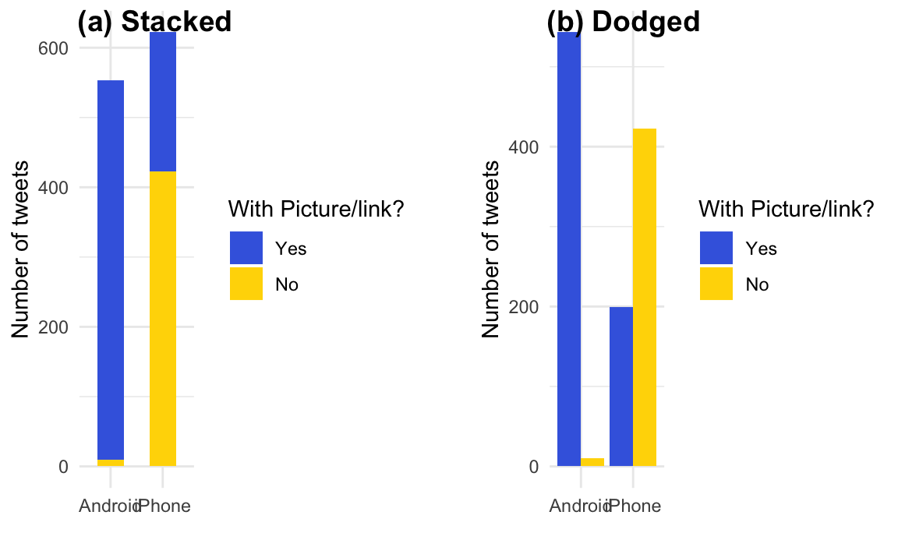

5.3 類別資料分析
這個範例涵括了在做問卷分析時常用的處理步驟。最核心的步驟是將文字陳述的類別資料轉換為便於後續運算的factor或數值資料。如果類別數量過多的時候，在這個過程會順便進行重新分組。例如依照年齡組把填答者分為老年、中壯年、青少年、兒童四組。
raw <- read_rds("data/tfc_survey.rds")5.3.1 清理資料
通常問卷會分為兩種類型的資料，一種是人口統計用的基本資料（如性別、年齡組、教育程度）、另一種是問卷本身要問的題項。以下是常見的問卷型態，包含把年齡從20歲開始每五年作為一組，70歲以上則歸類為一組，共會有十一組。而教育程度則常分為五至六組，但在問卷設計的時候，通常會需要增加「拒答」的選項。如果問卷中包含政黨意識形態，就必須要決定要以黨派作為類別變項，或者以意識形態做順序尺度。以下即為一個順序尺度的案例，從「非常接近泛綠」到「非常接近泛藍」共五個等第，但另增「拒答」選項。
dt <- raw %>%
mutate(QA3 = ordered(QA3, levels=c("20-24", "25-29", "30-34", "35-39",
"40-44", "45-49", "50-54", "55-59",
"60-64", "65-69", "70及以上"))) %>%
mutate(QA3_lv = ordered(QA3,
levels=c("20-24", "25-29", "30-34", "35-39",
"40-44", "45-49", "50-54", "55-59",
"60-64", "65-69", "70及以上"),
labels = c("青年", "青年", "壯年", "壯年",
"壯年", "中年", "中年", "中年",
"中年", "老年", "老年"))) %>%
mutate(QA4 = ordered(QA4,
levels=c("拒答", "國小及以下", "初中、國中",
"高中、高職", "大專（專科與大學）",
"研究所及以上"),
labels=c("拒答", "國小以下", "國中",
"高中職", "大專", "研究所以上"))) %>%
mutate(QASide=ordered(QASide,
exclude="拒答",
levels=c("非常接近泛綠", "接近泛綠",
"都不接近", "接近泛藍", "非常接近泛藍")))5.3.1.1 轉類別變項為factor
在一開始清理資料的時候，會建議先把類別變數（通常是文字型態）轉為factor型態。常用的函式是用mutate()搭配ordered()來改變變數型態。ordered()會照類別順序來標定該factor所對應到的數字。可以用as.integer()將factor轉為整數後就可以看到各類別的順序。
dt$QA3[1:10]## [1] 25-29 35-39 35-39 20-24 45-49 25-29 30-34 20-24 20-24 55-59
## 11 Levels: 20-24 < 25-29 < 30-34 < 35-39 < 40-44 < 45-49 < 50-54 < ... < 70及以上as.integer(dt$QA3[1:10])## [1] 2 4 4 1 6 2 3 1 1 85.3.1.2 排除某些類別值
如果有某些類別變數的值（如「拒答」）不想被編入factor，可以在reorder()中加入exclude的參數指定不想被編入類別值。
dt$QASide[1:10]## [1] 非常接近泛綠 接近泛藍 接近泛綠 接近泛綠 非常接近泛綠
## [6] 非常接近泛藍 接近泛綠 接近泛綠 接近泛藍 接近泛綠
## Levels: 非常接近泛綠 < 接近泛綠 < 都不接近 < 接近泛藍 < 非常接近泛藍as.integer(dt$QASide[1:10])## [1] 1 4 2 2 1 5 2 2 4 25.3.1.3 群組化類別值
如果有某些類別變數的類別過多，希望再次群組化為較少的組別，如重新群組各年齡層為青年、壯年、中年與老年四個尺度。此時除了levels參數外，可以另外加入labels的參數，指定每個類別變數值所要對應到的群組。以下為群組後的結果，仔細觀察剩下多少個尺度。
dt$QA3[1:10]## [1] 25-29 35-39 35-39 20-24 45-49 25-29 30-34 20-24 20-24 55-59
## 11 Levels: 20-24 < 25-29 < 30-34 < 35-39 < 40-44 < 45-49 < 50-54 < ... < 70及以上as.integer(dt$QA3[1:10])## [1] 2 4 4 1 6 2 3 1 1 8dt$QA3_lv[1:10]## [1] 青年 壯年 壯年 青年 中年 青年 壯年 青年 青年 中年
## Levels: 青年 < 壯年 < 中年 < 老年5.3.2 尺度轉類別指標
- Q7 請問您會不會受到假消息影響？
- Q8 請問您認為其他人會不會受到假消息的影響？
對於Q7、Q8的問題是詢問填答者認為自己或他人會不會受到假消息影響，並從「一點也不會」、「不會」、「會」到「絕對會」共分四個等第。Q7分別是「81, 446, 650, 39」、Q8分別是「5, 58, 803, 350」。相較於Q7，Q8的分佈略為左傾，亦即傾向於認為其他人較容易受影響。此時如果想要分析Q7和Q8間的關係，由於各有四個等第，其交叉分析表會有16個項目，相當難以分析。
dt2 <- dt %>%
mutate(Q7 = ordered(Q7, levels=c("一點也不會", "不會", "會", "絕對會"))) %>%
mutate(Q8 = ordered(Q8, levels=c("一點也不會", "不會", "會", "絕對會"))) %>%
mutate(Q7_3rd = as.numeric(Q8)-as.numeric(Q7)) %>%
mutate(Q7_3rd_lv = ifelse(Q7 %in% c("一點也不會", "不會") & Q8 %in% c("會", "絕對會"), "高", "低")) %>%
mutate(Q7_3rd_lv = ordered(Q7_3rd_lv, levels=c("低", "高")))這時候一種策略是把這兩題視為順序尺度變數，然後把兩題的分數相減。相減後的分數從「-1, 0, 1, 2, 3」各有「12, 482, 600, 103, 19」，不難猜到會是一個較為集中的分佈，後續僅能當作順序尺度或連續變項來分析，不適合找一個閾值轉類別變項。
另一種策略是，分別先把Q7與Q8的「一點也不會」和「不會」群組為「不會」、再把「會」與「絕對會」群組為「會」，這樣Q7與Q8的交叉分析表會變成2X2的分析表，雖然群組數量比較少，但別忘記Q7的填答結果集中在會與不會、而Q8為一個較為偏右的分佈，集中在「會」和「絕對會」。Q8勢必會造成比例不均的分組。
dt2 %>% count(as.integer(Q8)-as.integer(Q7))| as.integer(Q8) - as.integer(Q7) | n |
|---|---|
| -1 | 12 |
| 0 | 482 |
| 1 | 600 |
| 2 | 103 |
| 3 | 19 |
最後這題所採行的策略是，做高、低第三人效果分組，也就是根據認為自己「一點也不會」、「不會」受影響，而他人「會」或「絕對會」受影響的重新群組為「高第三人效果組」，其他則為「低第三人效果組」。亦即，分組的一句是在對自己與他人的認知上，無模糊空間的分組方法（也就是認為自己至少不會，和認為別人應該會）。
dt2 %>% count(Q7_3rd_lv)| Q7_3rd_lv | n |
|---|---|
| 低 | 746 |
| 高 | 470 |
5.3.3 Cross-tabulating
(xtb <- xtabs(~QA3_lv + Q7_3rd_lv, data=dt2))| 低 | 高 | |
|---|---|---|
| 青年 | 178 | 110 |
| 壯年 | 370 | 199 |
| 中年 | 157 | 134 |
| 老年 | 41 | 27 |
(chi2 <- chisq.test(xtb))##
## Pearson's Chi-squared test
##
## data: xtb
## X-squared = 10.017, df = 3, p-value = 0.01842vcd::assocstats(xtb)## X^2 df P(> X^2)
## Likelihood Ratio 9.9301 3 0.01917
## Pearson 10.0173 3 0.01842
##
## Phi-Coefficient : NA
## Contingency Coeff.: 0.09
## Cramer's V : 0.091print(round(chi2$observed, 2))## Q7_3rd_lv
## QA3_lv 低 高
## 青年 178 110
## 壯年 370 199
## 中年 157 134
## 老年 41 27print(round(chi2$expected, 2))## Q7_3rd_lv
## QA3_lv 低 高
## 青年 176.68 111.32
## 壯年 349.07 219.93
## 中年 178.52 112.48
## 老年 41.72 26.28print(round(chi2$residuals, 2))## Q7_3rd_lv
## QA3_lv 低 高
## 青年 0.10 -0.12
## 壯年 1.12 -1.41
## 中年 -1.61 2.03
## 老年 -0.11 0.14par(family="Heiti TC Light")
gplots::balloonplot(t(xtb), xlab="第三人效果", ylab="年齡組", main="",
dotsize=4/max(strwidth(40),strheight(40)),
text.size=1.5,label.size=2,
rowmar=1, colmar=1)
par(family="Heiti TC Light")
corrplot::corrplot(chi2$residuals, is.corr = F)
xtb %>% as_tibble() %>%
group_by(QA3_lv) %>%
mutate(fill = if_else(n == max(n), "orangered", "skyblue")) %>%
ungroup() %>%
mutate(QA3_lv = ordered(QA3_lv,
levels=c("青年", "壯年", "中年", "老年"))) %>%
arrange(desc(QA3_lv)) %>%
ggplot() + aes(y = QA3_lv, x=Q7_3rd_lv, color = fill, size = n) +
scale_size_area(max_size=70, guide = "none") +
geom_point(alpha=0.7) +
scale_color_manual(values = c("orangered", "skyblue"), guide = "none") +
geom_text(aes(
label=n,
vjust=1.3,
size=10
), color="black",) + theme_minimal() +
theme(text = element_text(family="Heiti TC Light"),
title = element_text(family="Heiti TC Light"))